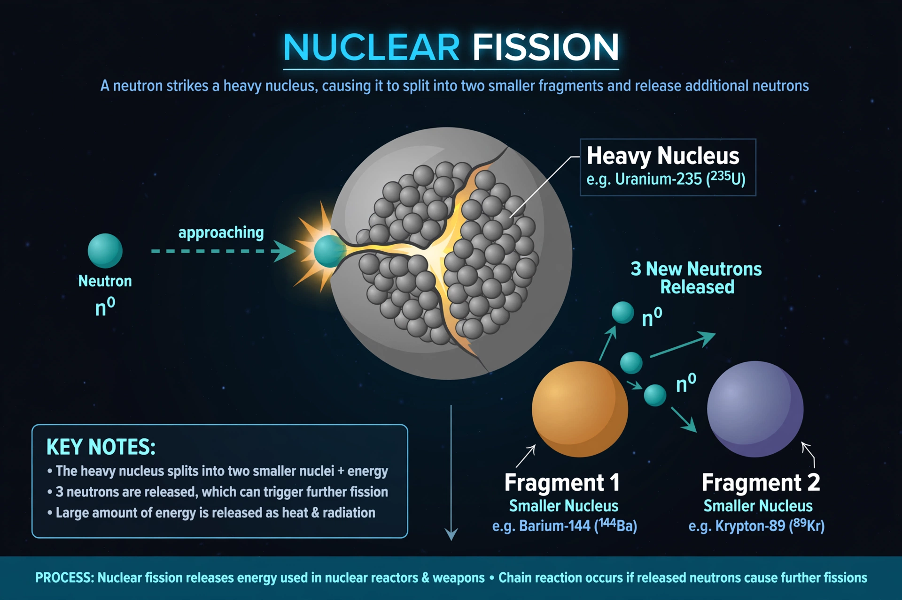

Nuclear fission
From Wikipedia, the free encyclopedia

[Image: A diagram-style illustration of a neutron striking a heavy nucleus that splits into two fragments and more neutrons]A diagram-style illustration of a neutron striking a heavy nucleus that splits into two fragments and more neutrons
Nuclear fission is a reaction in which the nucleus of a heavy atom, such as uranium-235 or plutonium-239, splits into two or more smaller nuclei, releasing a large amount of energy, gamma rays and free neutrons. Those neutrons can trigger further fissions, producing a chain reaction.
Fission was discovered experimentally in Berlin in December 1938 by Otto Hahn and Fritz Strassmann and explained theoretically by Lise Meitner and Otto Frisch, who named it by analogy with cell division. Controlled fission powers nuclear reactors; uncontrolled fission powers atomic bombs. Each fission of a uranium-235 nucleus releases roughly 200 MeV — millions of times more energy per atom than chemical burning.
Mechanism
A slow (thermal) neutron absorbed by U-235 makes the nucleus unstable; it elongates and splits into fragments such as barium and krypton, plus two or three neutrons and energy carried mostly as fragment kinetic energy, which becomes heat. Moderators such as water or graphite slow neutrons in reactors to sustain the chain at a steady rate.
See also
Nuclear reactor · Uranium · Chain reaction · Enrico Fermi · Atomic bomb · Nuclear power